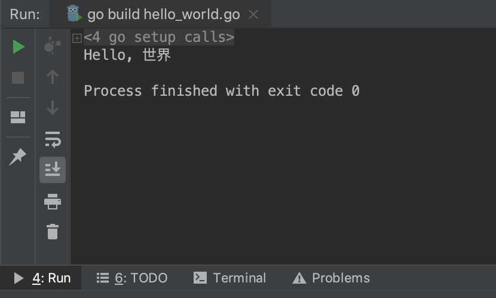
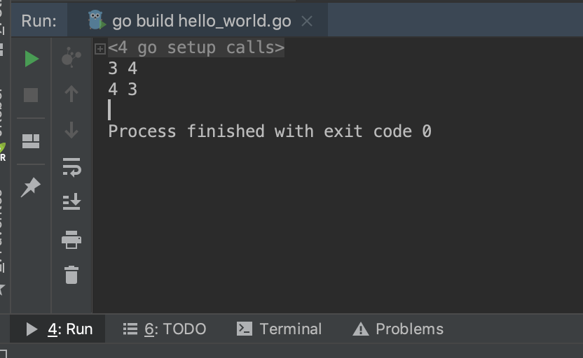
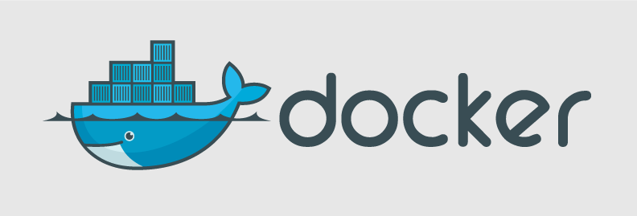
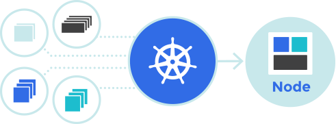
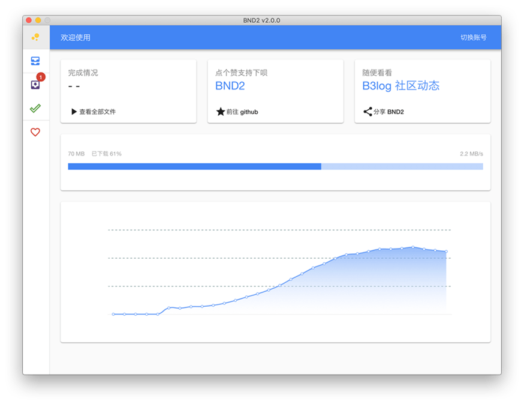
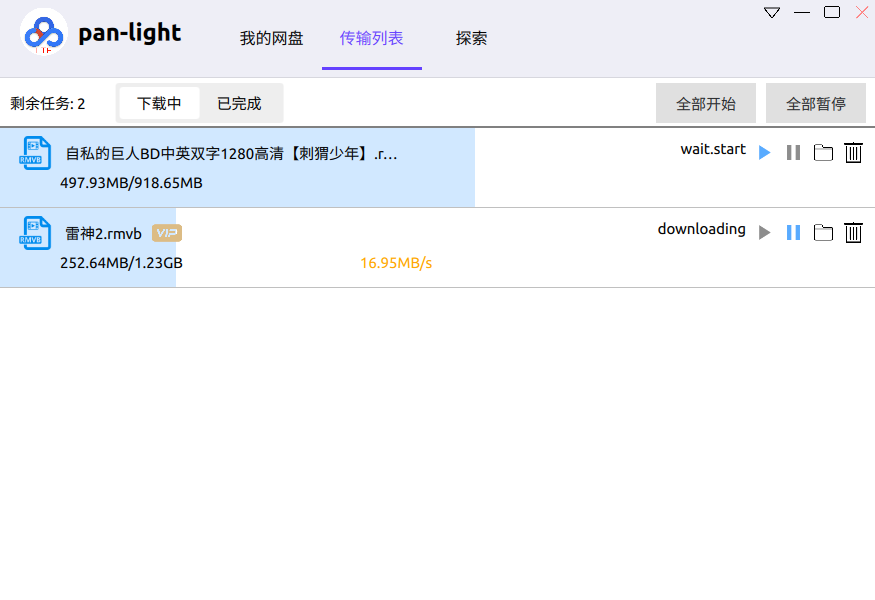

1. go 学习笔记

Go 是一种开源编程语言,可以轻松构建简单,可靠,高效的软件.
摘录自 github: https://github.com/golang/go,其中官网(国外): https://golang.org 和官网(国内): https://golang.google.cn/
Go 是 Google 公司推出的静态强类型,编译型,并发型,并具有垃圾回收功能的开源编程语言,最初由 Robert Griesemer , Rob Pike ,Ken Thompson 三人主持开发,后来陆续加入其他开发者,最终于 2009 年 11 月正式开源.
1.1. 创始人都是大神
Go 的三位主要创始人分别是: 罗伯特·格瑞史莫(Robert Griesemer),和肯·汤普逊(Ken Thompson)
- 罗伯特·格瑞史莫(
Robert Griesemer)
JS V8 引擎,Chubby ,Java HotSpot 虚拟机,Sawzall 语言和 Strongtalk 系统
github: https://github.com/griesemer
- 罗勃·派克(
Rob Pike)
Plan 9 操作系统和UTF-8 编码
github: https://github.com/robpike
- 肯·汤普逊(
Ken Thompson)
UNIX 操作系统 ,Plan 9 操作系统,B 语言,UTF-8 编码
github: https://github.com/ken
如此厉害的三位大牛合作创作的 Go 语言还能差到哪里去呢?
1.2. 吉祥物也很可爱
原来的 logo 是一只可爱的囊地鼠,英文名叫 gopher.

新的 logo 是现代化图标,代表更快更强,体现速度和效率.
网上流传甚广的一组很萌很可爱的吉祥物,并附上 github 链接: https://github.com/tenntenn/gopher-stickers

1.3. 体验 go 语言魅力
- 案例一
fmt.Println("Hello, 世界"): 输出字符串并换行
package main
import "fmt"
func main() {
fmt.Println("Hello, 世界")
}

- 案例二
a, b = b, a: 互换变量a和b的值,而其他语言一般都需要引入临时变量.
package main
import "fmt"
func main() {
var a = 3
var b = 4
fmt.Println(a, b)
a, b = b, a
fmt.Println(a, b)
}

- 案例三
go+chan关键字轻松完成并行计算
package main
import (
"fmt"
"math"
)
func main() {
fmt.Println(pi(5000))
}
func pi(n int) float64 {
ch := make(chan float64)
for k := 0; k <= n; k++ {
go term(ch, float64(k))
}
f := 0.0
for k := 0; k <= n; k++ {
f += <-ch
}
return f
}
func term(ch chan float64, k float64) {
ch <- 4 * math.Pow(-1, k) / (2*k + 1)
}

1.4. 到底好用不好用
Go 语言是云计算时代的 C 语言也称为21 世纪的 C 语言,由此可见,Go 的地位非同一般.
Go 语言的诞生是为了提高生产效率,专门对多处理器系统应用程序的编程进行了优化,使用Go编译的程序可以媲美C或C++代码的速度,而且更加安全,支持并行进程.
- 运行效率高,开发高效,部署简单.
运行效率高是因为编译性语言与解释性语言相比,开发高效是语法简单,部署简单是直接部署编译后的程序.
- 语言层面支持并发,易于利用多核实现并发.
不同于 php,只需要 go 配合 channel 即可完成进程或线程所做的工作.
- 内置
runtime并支持垃圾回收
类似
Java虚拟机支持垃圾回收,不必手动进行内存管理.
- 简单易学,丰富的标准库,强大的网络库.
学习成本低,语法简单但表达能力强,支持函数式编程,面向对象编程等多种编程范式.
- 内置强大的工具(
gofmt),跨平台编译,内嵌C支持.
不同的人有不同的代码风格,可转化统一风格
1.5. 志同道合有几人
Docker: 是为开发人员构建和运行应用程序而构建的平台

Kubernetes: 自动化容器部署,扩展,管理的应用程序

Etcd: 分布式键值对存储系统
baidu-netdisk-downloaderx: 一款图形界面的百度网盘不限速下载器,支持Windows,Linux和Mac

pan-light: 百度网盘不限速客户端,golang + qt5, 跨平台图形界面

1.6. 自学技术哪家强
- https://golang.org/ : The Go Programming Language
- https://golang.google.cn/ : The Go Programming Language
- https://tour.go-zh.org/welcome/1 : Go 语言之旅
- https://studygolang.com/ : Go语言中文网- Golang中文社区
- https://www.runoob.com/go/go-tutorial.html : Go 语言教程| 菜鸟教程
1.7. 自问自答解疑惑
go和golang是什么关系?
go 是 golang 的简称,golang 是 go language 的缩写,即 go 语言.
go的常用IDE有哪些?
独立集成工具主要有 LiteIDE 和 GoLand 两种,但是常见 IDE 基本上均提供各种 Go 插件,支持 Windows ,MacOS 和 Linux 常见操作系统.
go的常见Web开发框架有哪些?
Beego ,Iris 和 Gin 等,国人用的比较多是 Beego,目前资料也比较齐全.
1.8. 无总结不成文章
Go 是 Google 出品的开源编程语言,出身名门注定不凡,并且拥有十分活跃的社区环境.
国内使用 Go 语言比较早的公司主要有七牛云和 beego,其中七牛云主要是云存储方面的业务,这也正是 Go 支持高并发分布式的特色,而 Beego 是 Go 的 Web 开发框架,支持 MVC 编程模型,不愧是国人开发深受国人喜爱.
同时,今年著名的 bilibili 源代码泄露事件也让我们看到了 Go 的身影,侧面说明了 Go 越来越流行,不愧是 21 世纪的 C 语言啊!
好了,暂时没有别的废话了,本文到此为止,下一章将开始介绍 Go 语言的环境搭建与 IDE 的基本配置,敬请期待.